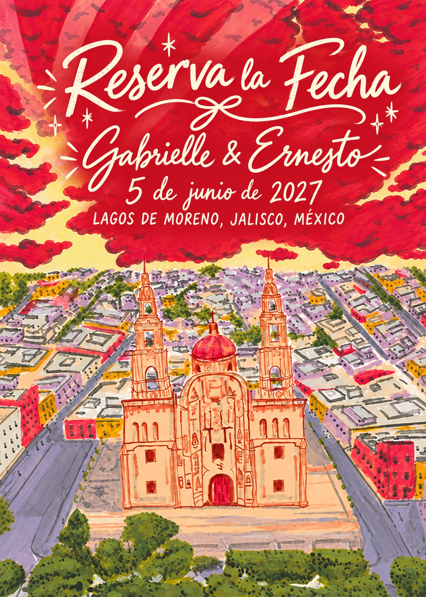
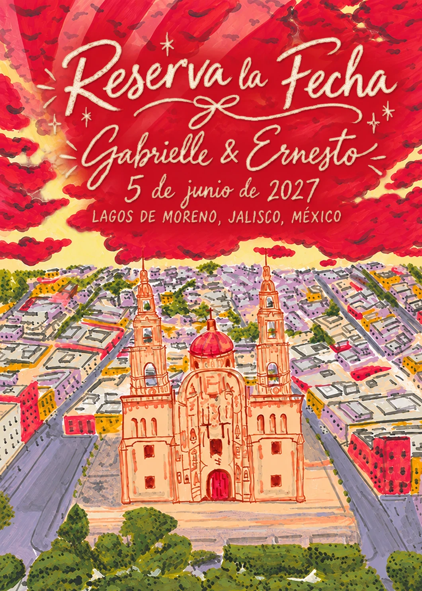
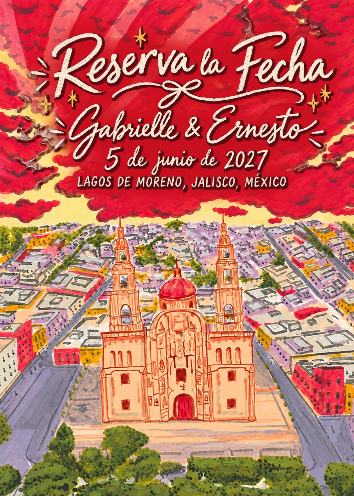
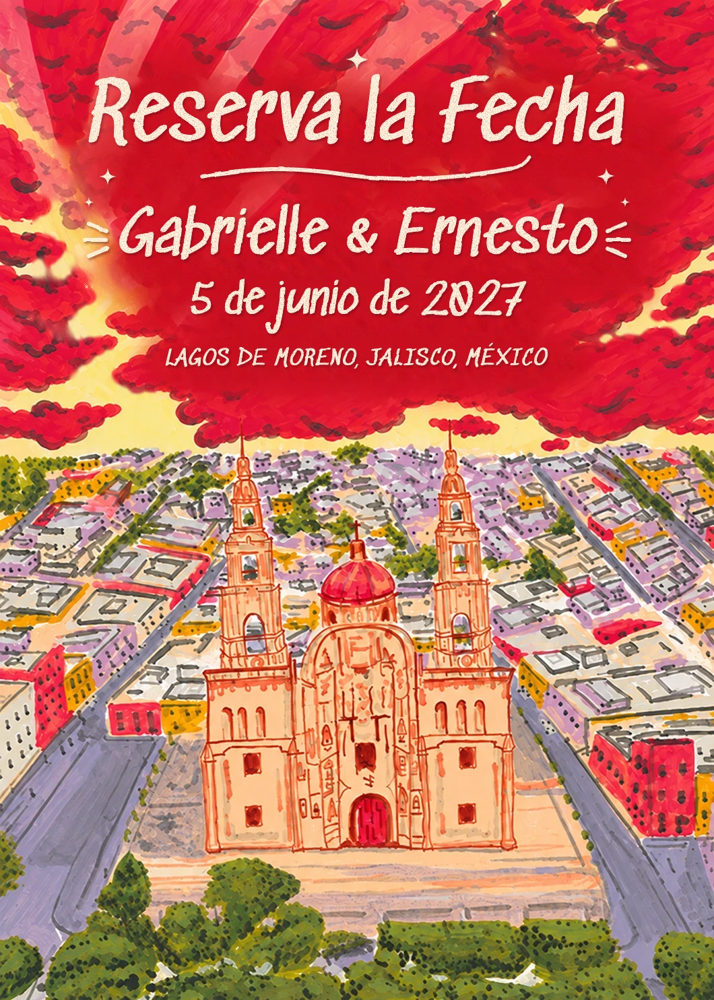
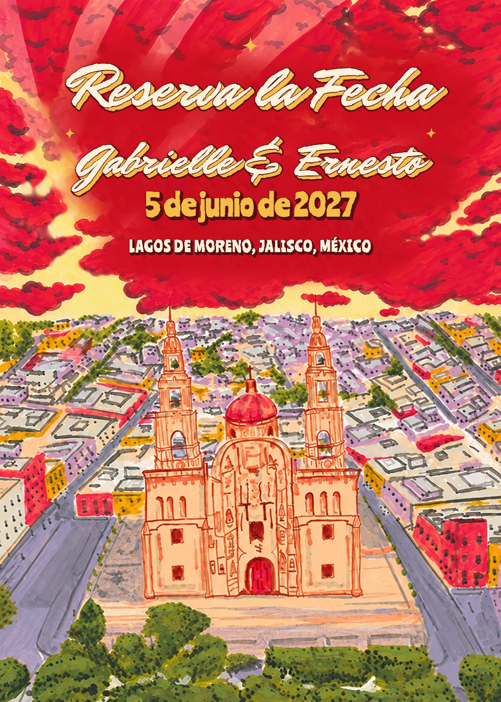
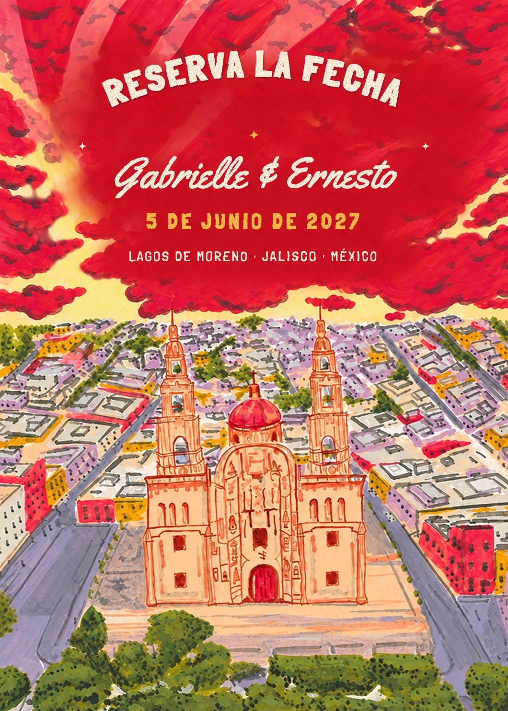

Five ways to make the lettering on the card feel more hand-drawn, like the illustration. The words, date and art are the same in all of them. Tap a card to see it full size, or watch it come out of the envelope.

The version on the preview link today, for comparison.
See it in the envelope →
Same lettering, repainted like gouache: wobblier edges, a little paper grain and a soft shadow. The subtlest change.
See it in the envelope →
Same lettering with a loose dark-red outline, drawn like the outlines on the clouds, plus gold sparkles.
See it in the envelope →
New, casual lettering, as if the illustrator wrote it straight onto the painting with a paint marker.
See it in the envelope →
Bold brush script with a gold shadow, in the style of the hand-painted signs on Mexican shopfronts.
See it in the envelope →
Hand-drawn capitals arched over the town and a retro script for the names, like a vintage travel poster.
See it in the envelope →Pick a number (or mix, e.g. “the outline from 2 with the letters of 3”) and it goes onto the official save-the-date link.